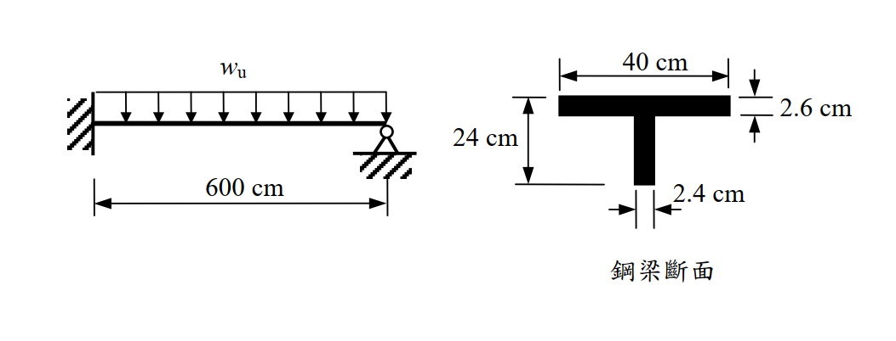

考題編號：SS-2005-4
主分類： SS-U2-1 塑性分析與設計
副分類： SS-U1-2 梁桿件
設計法： 塑性分析
標籤： 塑性分析 崩塌機制 塑性鉸 固端梁 T型斷面 塑性斷面模數 虛功法 均布載重 propped cantilever
1. 原始題目重述
四、有一靜不定鋼梁兩端分別為固接與簡支，鋼梁斷面為 T 型，使用鋼材 $F_y = 2.5\ \text{tf/cm}^2$，$F_u = 4.1\ \text{tf/cm}^2$。假設鋼梁有足夠側向支撐且為結實斷面。試以塑性設計法（Plastic design），僅考慮撓曲強度，計算鋼梁所能承受之因數化載重 $w_u$（不考慮鋼梁自重）。（25 分）
T 型斷面（依考卷原圖）：
- 翼板：$b_f = 40\ \text{cm}$，$t_f = 2.6\ \text{cm}$
- 腹板厚：$t_w = 2.4\ \text{cm}$
- 全深 $d = 24\ \text{cm}$（尺寸線由翼板頂面量至腹板底）→ 腹板淨高 $h_w = 24 - 2.6 = 21.4\ \text{cm}$

圖說（依考卷原圖 600 dpi 目視判讀，2026-11-01 更正）：左端固接、右端鉸支（簡支），跨度 600 cm，均布載重 $w_u$ 作用於全跨。T 型斷面：翼板寬 40 cm、厚 2.6 cm；左側「24 cm」尺寸線上界線對齊翼板頂面、下界線對齊腹板底 → 全深 24 cm；腹板厚 2.4 cm。
2. 考題核心精神與出題者意圖
本題測驗塑性分析（plastic analysis）的完整流程：
1. 識別結構超靜定次數 → 確定崩塌所需塑性鉸個數
2. 計算 T 型斷面的塑性斷面模數 Z 與 Mp（PNA 位置判斷）
3. 以虛功法（virtual work method）推導均布載重下的崩塌載重
核心難點：propped cantilever 的跨間鉸位置 $x$ 不固定，需對 $x$ 求極值，導出含 $\sqrt{2}$ 的解；以及從附圖正確讀出「24 cm」是全深。
3. 解題戰略地圖與陷阱分析
作戰計畫：
1. 確認崩塌機制：固端 + 跨間某點 = 2 個塑性鉸
2. 計算 T 型斷面 PNA、Z、Mp
3. 設跨間鉸距固端 $x$，用虛功法建立方程
4. 對 $x$ 求最小 $w_u$
5. 代入解析解 $x = L(2-\sqrt{2})$，平衡法驗算
陷阱分析：
| 陷阱 | 說明 | 應對策略 |
|---|---|---|
| ⚠️ 斷面尺寸讀錯 | 「24 cm」是全深，腹板淨高為 21.4 cm；誤當腹板高再加翼板（26.6 cm）會高估 $M_p$ 22% | 看尺寸線界線落點 |
| ⚠️ 誤以為鉸在中央 | 均布載重的跨間鉸 不在跨中 | 對 $x$ 微分 → $x = L(2-\sqrt{2}) \approx 0.586L$ |
| ⚠️ PNA 誤算 | 先比較翼板面積與半面積 | 104 > 77.68 → PNA 在翼板內 |
| ⚠️ 負彎矩也需達 Mp | 固端為負彎矩 | T 斷面 $Z^+ = Z^-$（等面積分割與方向無關） |
3.5 變數層次分析（Variable Hierarchy Analysis）
複習提示：解題後，在每個卡住的知識點「卡關?」欄標記
⚠；第二次複習時只看有⚠的項目。
最終目標： propped cantilever T 型梁塑性分析 → $M_p = 1668.6$ tf·cm → 崩塌載重 $w_u = 5.40$ tf/m
主要公式（$\boxed{\phantom{x}}$ = 未知，待推導）
$$\text{半面積} = A_g/2 \Rightarrow \boxed{c_{\text{PNA}}} \quad \text{（PNA 在翼板內）}$$
$$\boxed{Z} = \Sigma A_i |y_i - c_{\text{PNA}}|, \qquad \boxed{M_p} = F_y \times \boxed{Z}$$
$$w_u(x) = \frac{2M_p(2L-x)}{Lx(L-x)}, \qquad \frac{dw_u}{dx} = 0 \Rightarrow \boxed{x} = L(2-\sqrt{2})$$
$$\boxed{w_u} = (6+4\sqrt{2})\frac{M_p}{L^2}$$
L1：題目直接給定
| 符號 | 數值 | 說明 |
|---|---|---|
| $L$ | 600 cm | 梁跨度 |
| $F_y$ | 2.5 tf/cm² | 材料強度 |
| 邊界條件 | 左端固接、右端簡支 | 超靜定次數 1 |
| $b_f$、$t_f$ | 40 cm、2.6 cm | 翼板 |
| $d$ | 24 cm | 全深 |
| $t_w$ | 2.4 cm | 腹板厚 |
L2：需知識點推導
| 符號 | 公式 / 來源 | 卡關? |
|---|---|---|
| $h_w$ | $24 - 2.6 = 21.4$ cm | |
| $A_g$ | $40\times2.6 + 21.4\times2.4 = 104 + 51.36 = 155.36$ cm² | |
| $A/2$ | 77.68 cm² < 翼板 104 → PNA 在翼板內 | |
| $c_{\text{PNA}}$ | $77.68/40 = 1.942$ cm（距翼板頂） | |
| $Z$ | $75.43 + 8.66 + 583.35 = 667.43$ cm³ | |
| $M_p$ | $2.5 \times 667.43 = 1668.6$ tf·cm | |
| $x$ | $L(2-\sqrt{2}) = 351.5$ cm | |
| $w_u$ | $11.657 \times 1668.6/600^2 = 0.0540$ tf/cm |
L3：深層知識（不懂就卡住）
| 知識點 | 說明 | 補強頁 | 卡關? |
|---|---|---|---|
| 塑性鉸機構分析 | 超靜定次數 $n$ → 需 $n+1$ 個塑性鉸才能崩塌 | plastic-mechanism · PLASTIC-HINGE | |
| propped cantilever 鉸位置 | 均布載重的跨間鉸在 $x = 0.586L$（距固端），非 $L/2$ | ||
| T 型斷面 PNA | 先比較翼板面積與半面積，確認 PNA 所在區域 | plastic-zx | |
| 尺寸線判讀 | 尺寸線兩條界線各對齊哪一個邊，決定量的是全深或腹板高 |
4. 步驟化詳細計算過程
4.1 超靜定次數與崩塌機制
一端固接、一端簡支，超靜定次數 = 1 → 崩塌需 2 個塑性鉸：固端 A（$-M_p$）與跨間 C（距 A 為 $x$，$+M_p$）。
4.2 T 型斷面 PNA 與 Z
$$h_w = d - t_f = 24 - 2.6 = 21.4\ \text{cm}$$
$$A_g = 40 \times 2.6 + 21.4 \times 2.4 = 104 + 51.36 = 155.36\ \text{cm}^2, \qquad \frac{A}{2} = 77.68\ \text{cm}^2$$
翼板面積 104 > 77.68 → PNA 在翼板內：
$$40\bar{y} = 77.68 \Rightarrow \boxed{\bar{y} = 1.942\ \text{cm（距翼板頂面）}}$$
| 區塊 | 面積 (cm²) | 形心距 PNA (cm) | 貢獻 (cm³) |
|---|---|---|---|
| 翼板 PNA 以上 | $40 \times 1.942 = 77.68$ | 0.971 | 75.43 |
| 翼板 PNA 以下 | $40 \times 0.658 = 26.32$ | 0.329 | 8.66 |
| 腹板 | $21.4 \times 2.4 = 51.36$ | $0.658 + 10.7 = 11.358$ | 583.35 |
| 合計 | 667.43 |
$$M_p = F_y Z = 2.5 \times 667.43 = \boxed{1668.6\ \text{tf}\cdot\text{cm} = 16.69\ \text{tf}\cdot\text{m}}$$
（驗算：PNA 上下面積各 77.68 cm² ✓；T 斷面正負彎矩 $M_p$ 相同。）
4.3 虛功法
令固端 A 虛轉角 $\theta_A$，C 點虛位移 $\delta_C = x\theta_A$，CB 段轉角 $x\theta_A/(L-x)$，C 點相對轉角 $\theta_A L/(L-x)$：
$$W_{ext} = w_u \frac{L\,\delta_C}{2} = w_u\frac{Lx\theta_A}{2}, \qquad W_{int} = M_p\theta_A\frac{2L-x}{L-x}$$
$$w_u(x) = \frac{2M_p(2L-x)}{Lx(L-x)}$$
4.4 求最小崩塌載重
$$\frac{dw_u}{dx} = 0 \Rightarrow x^2 - 4Lx + 2L^2 = 0 \Rightarrow \boxed{x = L(2-\sqrt{2}) = 351.5\ \text{cm（距固端）}}$$
$$w_u = (6+4\sqrt{2})\frac{M_p}{L^2} = \frac{11.657 \times 1668.6}{600^2} = \boxed{0.0540\ \text{tf/cm} = 5.40\ \text{tf/m}}$$
4.5 驗算（平衡法）
$$R_A = \frac{w_uL}{2} + \frac{M_p}{L} = \frac{0.05403 \times 600}{2} + \frac{1668.6}{600} = 16.21 + 2.78 = 18.99\ \text{tf}$$
$$M(x) = R_A x - \frac{w_u x^2}{2} - M_p = 18.99 \times 351.5 - \frac{0.05403 \times 351.5^2}{2} - 1668.6 = 1668.6\ \text{tf}\cdot\text{cm} = M_p\ \checkmark$$
且沿全跨數值掃描 $M_{max}$ 恰在 $x = 351.5$ cm、等於 $M_p$，不超過 $M_p$（下限定理成立）。
5. 關鍵爭議點與進階探討
5.1 解析解化簡
代入 $x = L(2-\sqrt{2})$、$L-x = L(\sqrt{2}-1)$、$2L-x = L\sqrt{2}$：
$$w_u = \frac{2\sqrt{2}}{(2-\sqrt{2})(\sqrt{2}-1)}\frac{M_p}{L^2} = \frac{2\sqrt{2}}{3\sqrt{2}-4}\frac{M_p}{L^2} = (6+4\sqrt{2})\frac{M_p}{L^2} \approx 11.657\frac{M_p}{L^2}$$
5.2 與彈性設計比較
彈性中性軸距頂面 $\bar{Y} = (104 \times 1.3 + 51.36 \times 13.3)/155.36 = 5.27$ cm；$I = 6969.5$ cm⁴；$S_{bot} = 6969.5/(24 - 5.27) = 372.0$ cm³。
彈性分析固端負彎矩 $wL^2/8$ 控制，底緣（受拉、離中性軸較遠）先降伏：
$$w_e = \frac{8F_yS_{bot}}{L^2} = \frac{8 \times 2.5 \times 372.0}{600^2} = 0.0207\ \text{tf/cm}$$
$w_u / w_e = 2.61$：T 型斷面形狀因子大（$Z/S_{bot} = 1.79$），加上彎矩重分配，塑性設計容量明顯較高。
5.3 結實斷面檢核
翼板 $\dfrac{b_f/2}{t_f} = \dfrac{20}{2.6} = 7.69 \le 17/\sqrt{F_y} = 10.75$ ✓；腹板（T 肢）$d/t_w = 24/2.4 = 10$，甚小 ✓。
5.4 更正說明
舊版解答把「24 cm」當腹板高、全深取 26.6 cm，得 $M_p = 2032.5$ tf·cm、$w_u = 6.58$ tf/m，高估約 22%。依原圖全深為 24 cm，正確 $w_u = 5.40$ tf/m。
6. 依最新規範（AISC 360-16／-22）對照
| 項目 | 考卷（塑性設計） | AISC 360-16／-22 |
|---|---|---|
| 塑性分析 | 機構法，$w_u = 11.657M_p/L^2$ | 附錄 1「以非彈性分析設計」允許，但限結實斷面、側撐間距 $L_{pd}$ 等條件 |
| T 型斷面 $M_n$ | $M_p = F_yZ$ | F9：肢受拉時 $M_p = F_yZ_x \le 1.6M_y$；肢受壓（負彎矩）$M_p \le M_y$ |
本題以 360-16 F9 估算： 正彎矩（肢受拉）$1.6M_y = 1.6 \times 2.5 \times 1323.2 = 5293$ tf·cm > $M_p$ → $M_p^+ = 1668.6$；負彎矩（固端，肢受壓）$M_p^- \le M_y = F_yS_{bot} = 930.1$ tf·cm。以 $M_A = 930.1$、$M_C = 1668.6$ 重做機構分析，$w_u$ 約 4.2 tf/m（較考卷版低約 22%）。新版對 T 型肢受壓的限制正是為了避免肢部局部降伏後失穩。
修正日期：2026-11-01（依考卷原圖 600 dpi：T 型斷面「24 cm」為全深（翼板頂至腹板底），原解誤作腹板高 24 cm、全深 26.6 cm。更正腹板淨高 21.4 cm、$A$ = 155.36 cm²、PNA 距頂 1.942 cm、$Z$ 813.0 → 667.4 cm³、$M_p$ 2032.5 → 1668.6 tf·cm，$w_u$ 6.58 → 5.40 tf/m；平衡法與全跨彎矩掃描驗算；§5.2 刪除殘留英文草稿並重算彈性比較；新增 §6 對照）
驗證狀態：unverified